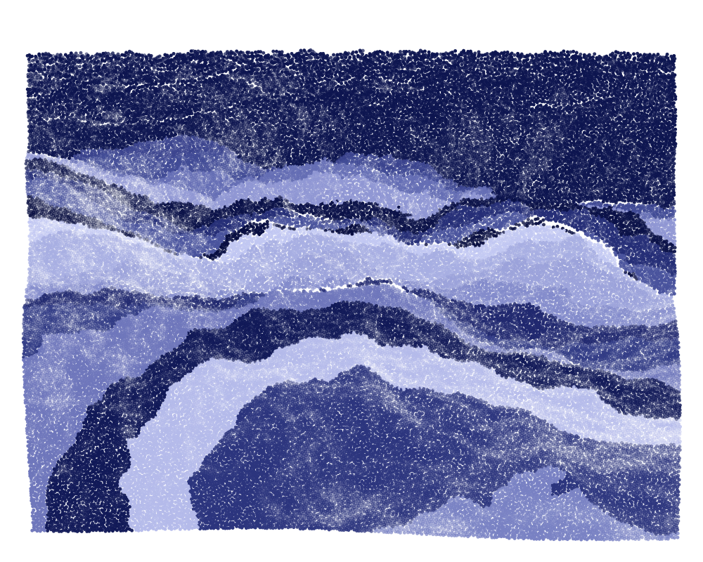
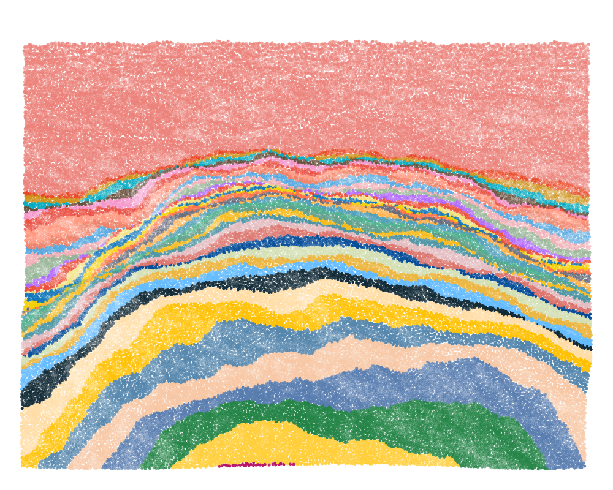
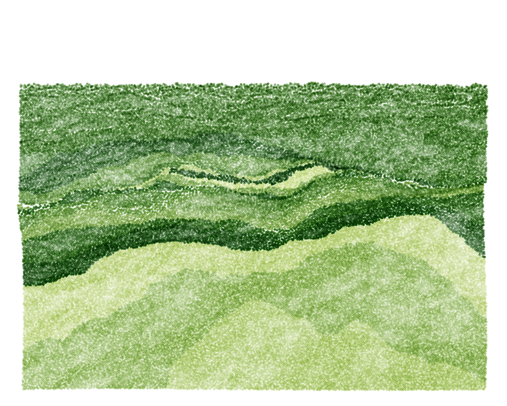
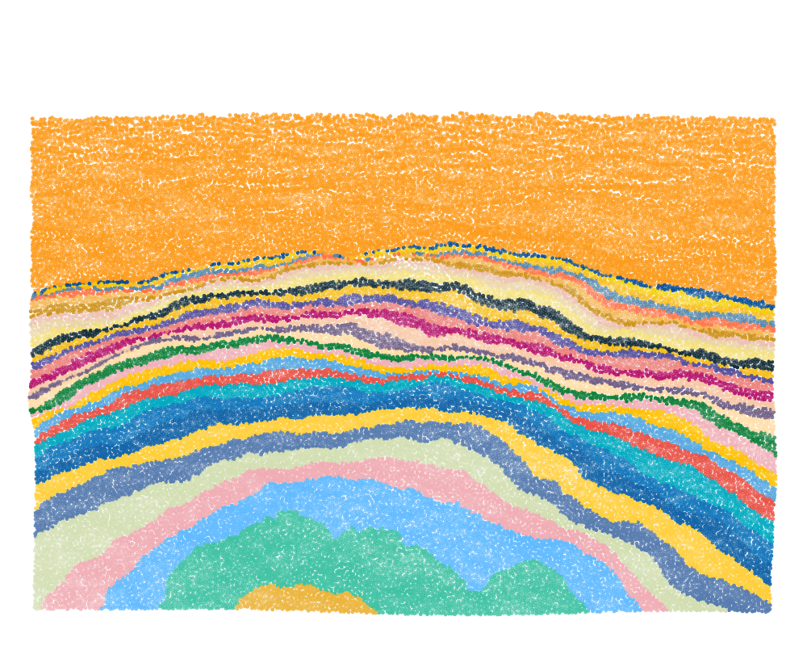
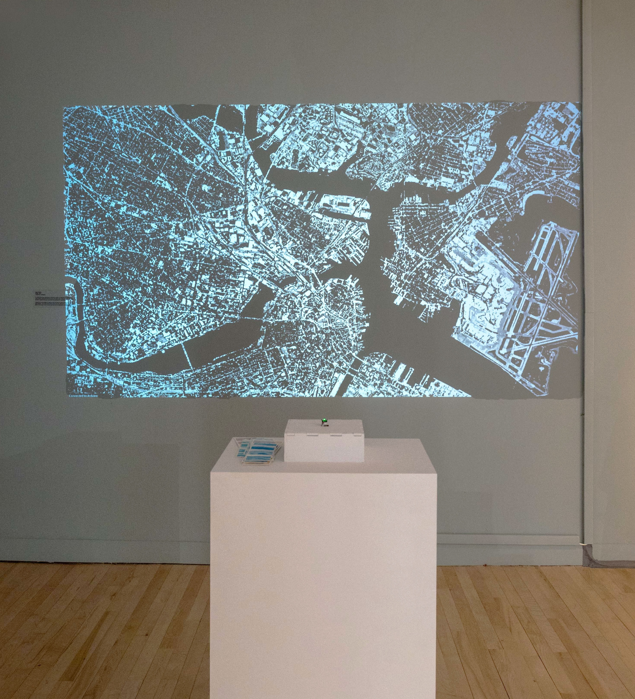
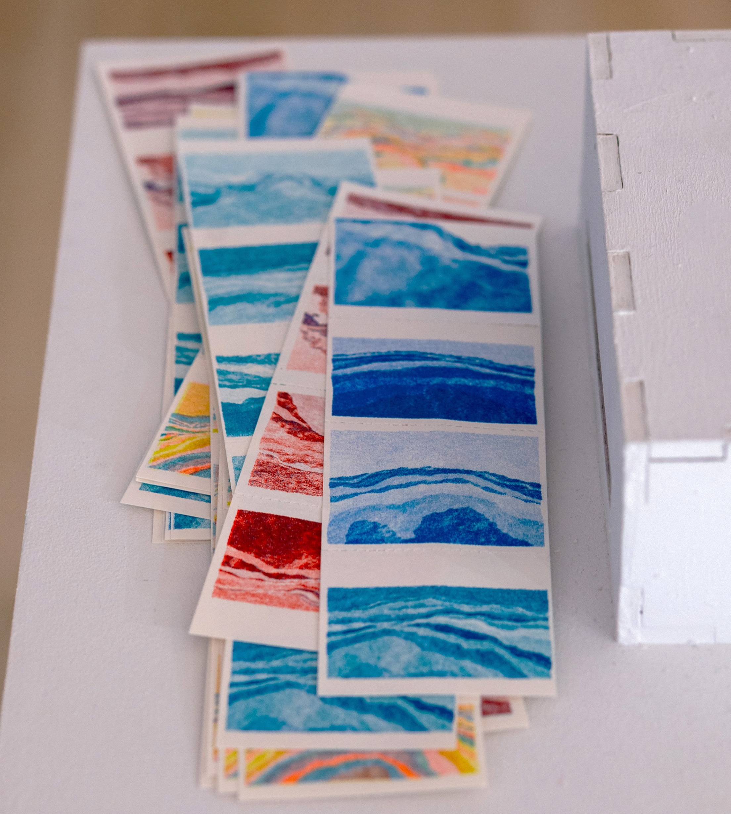
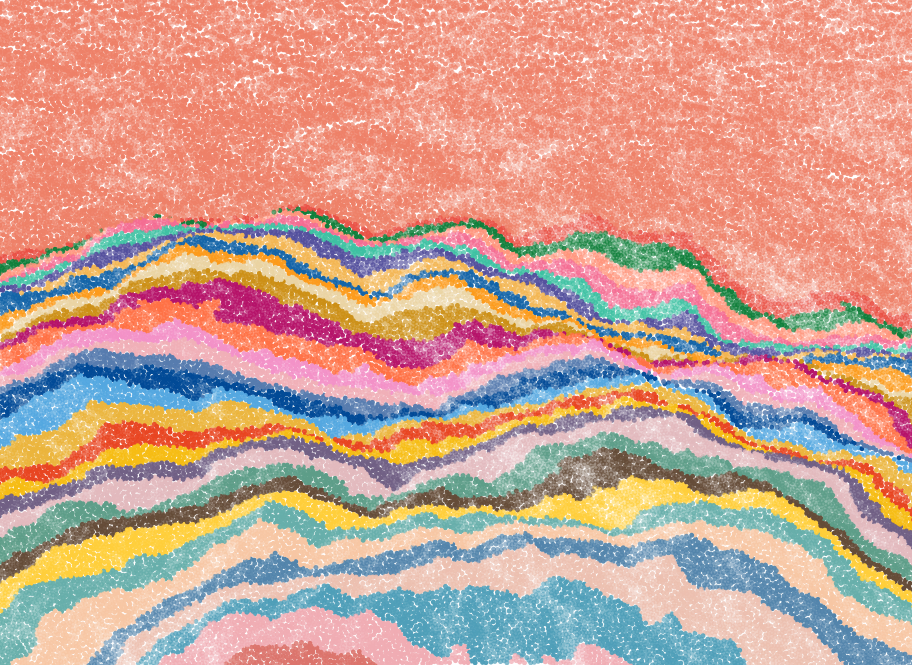
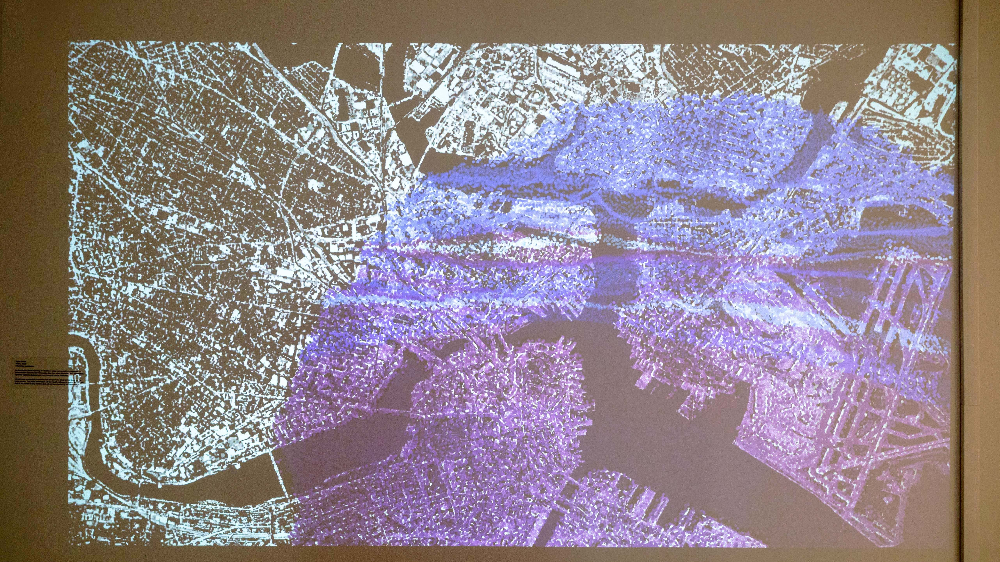

pulse is an installation featuring an electronic setup paired with a projection. A pulse sensor captures a participant's heartbeat in real time and, through interaction, generates a dynamic digital terrain built entirely from that signal.
This was an investigation into how art and technology can amplify human presence. Through computation and algorithmic processing, I transformed a participant’s heartbeat into an imaginative terrain overlaying the Boston map, reframing informatic analysis as poetic. I aimed to use technology as a tool for gaining perspective, to trace the relationship between presence and information
Research
Artists and Artwork
My research for this project began by exploring the work of artists who use data, the human body and interaction in their practice. I reviewed computational work by Tyler Hobbs, Refik Anadol and Laura Gines and large scale public work done by Franics Alys and Rafael Lozano-Hemmer . I learnt from the writing of these artists, especially Giorgia Lupi and Phillip Cox’s Speak Data, which spoke about the distinctions between data, information and interpretation.
Computational
My research also encompassed the technical processes behind visual technology and computer vision. Understanding the concept of noise, how to interpret it and transform it mathematically helped define the visuals. I also studied bit shifting, the random function, simplex transformation, and flow fields. All these concepts together informed how I went from an electronic wave signaling a heartbeat to a robust landscape.
visuals




How it Works
The electronic setup reads in a participant's heartbeat via a pulse sensor. An Arduino processes these numbers and sends them to a Processing sketch hosted on a Raspberry Pi.
The heartbeat is stored as a series of individual numbers chained together in four 32-bit integers (that’s around 40 decimal digits). This number becomes the algorithmic representation of the heartbeat, and becomes the driver for every stage of the render (terrain shape , camera position, color choices, strokes etc.). The terrain itself is also built from the heartbeat, which is used to generate simplex noise, that is then turned into a three-dimensional plane with fractal brownian motion. Then, through raymarching, the algorithm approximated the distance of a point in space from a fixed camera.
try the drivers
Each panel is one step in the render. Move the sliders to feel how a few numbers reshape the noise field, the terrain, the raymarcher's workload, and the brush strokes. Hover the terrain and raymarch panels; click the raymarcher to trace a single ray.
installation




future explorations
This initial setup gives me an interesting toolkit to explore further.
So far, I have created
I can also imagine the project with a musical component, which transforms with the heartbeat. I'm interested in collating a database of the images, and adding a printmaking component to the installation itself.